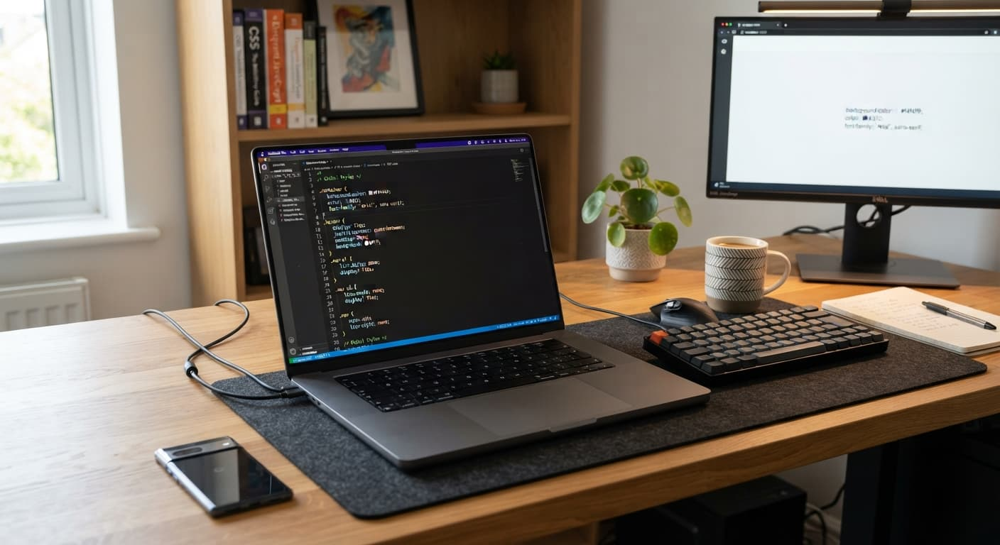
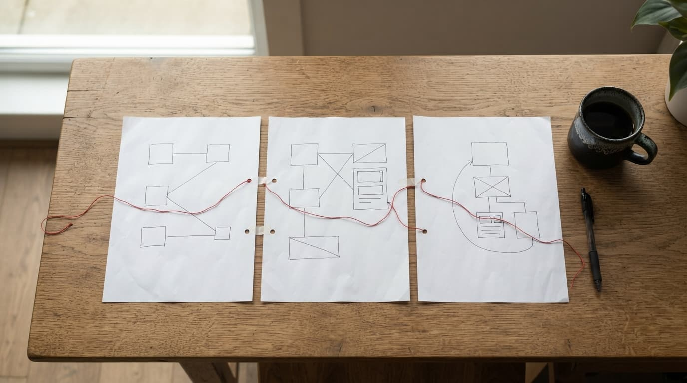
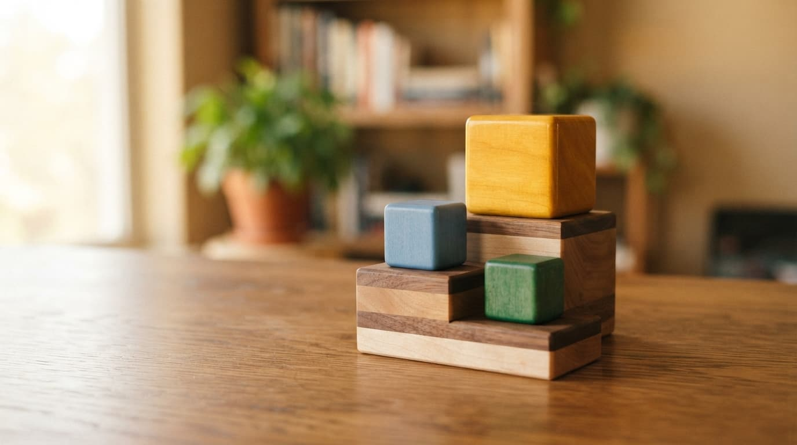
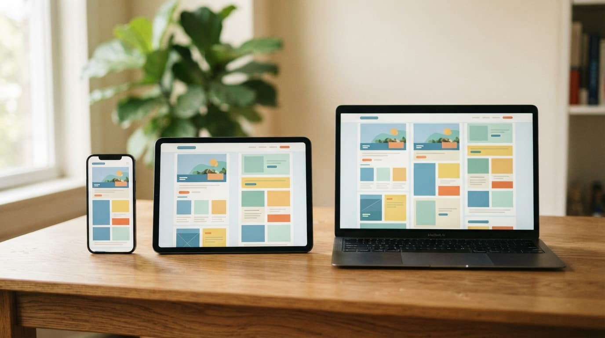
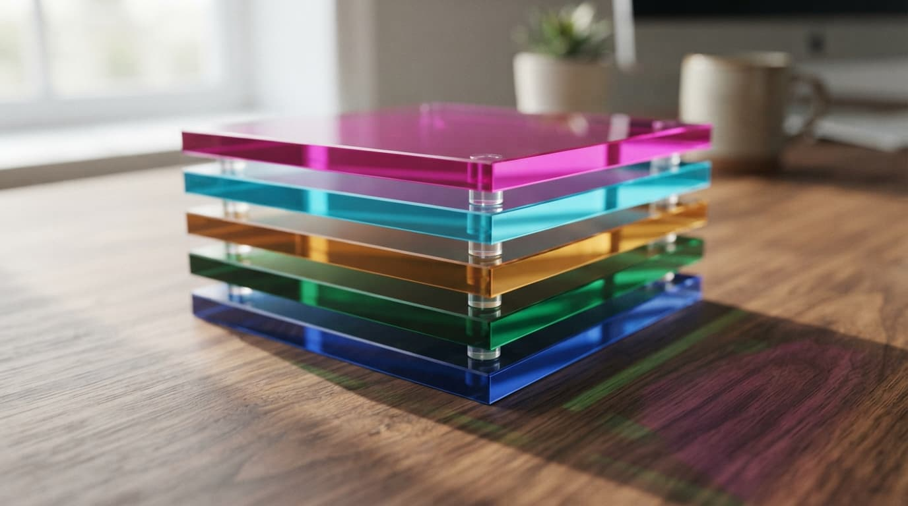

Aquí explico los nueve temas de CSS de la unidad, desde cómo se escribe una regla hasta el z-index. Cada tema está en su propia caja y usa un componente distinto de Bootstrap, así que la página también sirve de ejemplo de cómo funcionan.
CSS (hojas de estilo en cascada) es el lenguaje que le da la apariencia a una página: colores, tamaños, fuentes, espacios y la forma en que se acomodan los elementos. El HTML dice qué hay en la página y el CSS dice cómo se ve.
Empezar por la sintaxisEs una librería de CSS y JavaScript ya hecha. Trae clases listas como btn, card o col-6 que se ponen en el HTML sin escribir el CSS desde cero. Esta página está hecha con sus componentes y con el tema Brite de Bootswatch.
Ver la documentaciónCada caja de abajo es un tema. Algunas tienen partes que se mueven: pestañas, acordeones, un carrusel y una ventana que se abre encima. Dale clic a todo y achica la ventana del navegador para ver cómo se acomoda en tablet y celular.
Ir al primer temaUna regla de CSS tiene dos partes: el selector, que dice a qué elemento se le aplica el estilo, y entre llaves las declaraciones. Cada declaración tiene una propiedad y un valor, separados por dos puntos y terminados en punto y coma.
h1 {
color: blue;
font-size: 32px;
}Aquí h1 es el selector, color y font-size son propiedades, y blue y 32px son sus valores.

Hay tres formas de agregar CSS a una página. Dale clic a cada pestaña.
Se escribe en el atributo style de la etiqueta. Solo afecta a ese elemento. Sirve para algo rápido, pero no se recomienda porque toca repetirlo en cada etiqueta.
<p style="color: red;">Hola</p>Se escribe dentro de la etiqueta <style> en el <head> del HTML. Afecta a toda esa página, pero no a las demás.
<head>
<style>
p { color: red; }
</style>
</head>El CSS va en un archivo aparte con extensión .css y se enlaza con la etiqueta <link>. El mismo archivo sirve para varias páginas, por eso es la forma más usada. Esta página lo hace así con estilos.css.
<link href="css/estilos.css" rel="stylesheet">Es dejar espacios al inicio de las líneas para que se note qué va dentro de qué. Al navegador no le importa, pero el código se lee mejor y es más fácil encontrar errores. En CSS, las declaraciones van con sangría dentro de las llaves.
.caja {
width: 200px;
padding: 10px;
}
Algunas propiedades pasan del elemento padre a sus hijos, como color,
font-family y font-size. Otras no se heredan, como margin,
padding, border y background. Si al body le pongo un color,
todos los párrafos lo toman sin escribirlo otra vez.
Son textos que el navegador ignora. Sirven para explicar el código o para desactivar una parte
sin borrarla. En CSS se escriben entre /* y */.
/* estilos del menú */
nav {
background: black;
}
Cuando dos reglas le dan estilo al mismo elemento, gana la que tiene más peso. Si pesan lo mismo, gana la que está más abajo en el código. De menor a mayor peso:
Flexbox acomoda elementos en una sola dirección, en fila o en columna, con display: flex.
Grid acomoda en filas y columnas al mismo tiempo. El grid de Bootstrap divide el ancho en 12 columnas
con row y col: esta caja es col-lg-8, o sea que en PC ocupa 8 de las
12 columnas.
Los breakpoints son los anchos de pantalla donde cambia el diseño:
| Breakpoint | Clase | Desde |
|---|---|---|
| Extra pequeño | ninguna | menos de 576px |
| Pequeño | sm | 576px |
| Mediano | md | 768px |
| Grande | lg | 992px |
| Extra grande | xl | 1200px |
| Extra extra grande | xxl | 1400px |

Sirven para darle estilo a una parte de un elemento o para agregar contenido sin tocar el HTML. Se escriben
con dos puntos dobles ::.
La primera letra de este párrafo está más grande y de otro color gracias a ::first-letter.
Esta estrella la agrega ::before desde el CSS.
::before agrega algo antes::after agrega algo después::first-letter la primera letra::first-line la primera línea::placeholder el texto de ayuda de un input.nota::before {
content: "★ ";
}
Le dan estilo a un elemento según su estado o su posición. Se escriben con un solo :, por
ejemplo :hover, :focus, :disabled y :nth-child(n).
Pasa el mouse por los botones (:hover):
Botón deshabilitado (:disabled):
Las cajas de los temas también cambian al pasarles el mouse: es un :hover en estilos.css.

Cuando dos elementos quedan uno encima del otro, el z-index dice cuál queda adelante: el número más alto
queda encima. Solo funciona si el elemento tiene position distinta de static.
.ventana {
position: fixed;
z-index: 1055;
}La ventana modal es un ejemplo: aparece encima de toda la página, incluso del menú.